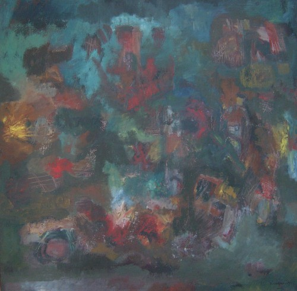

Debdas Chakraborty
1933–2008
Artist Biography
Debdas Chakraborty is one of the great modern Bangladeshi artists. He graduated from the Government Institute of Art in Dhaka in 1956 and was employed for some years as an artist at the Agricultural Information Centre. During the 1960s he was one of the few Dhaka-trained painters who exhibited regularly in West Pakistan and he also gained an international reputation. His painting has an elusive quality, an aggregation of forms often suggestive of human figures (such as in his Desire Symbols of 1963). A technique he frequently used was to start with figurative images and gradually obliterate them to produce virtually abstract works.
He represented Bangladesh at the XIX International Biennale at São Paulo in 1987 showing five large engravings. His work is now undergoing a reappraisal and Chakraborty is increasingly recognised for his immense contribution to Pakistani and later to Bangladeshi art, particularly in the 1960s and 1970s. Chakraborty had many solo shows, in later years including one at the Bengal Gallery of Fine Arts in Dhaka in 2001, and in 2005 his works and those of a number of other leading Bangladeshi artists were shown at a joint exhibition in Dhaka with top Indian artists (including F N Souza and M F Husain) to celebrate the close cultural ties between the two countries. Four of Chakraborty’s works are held by the National Gallery of Art in Islamabad, Pakistan.

War Figures (Conflict in Bangladesh), 1973